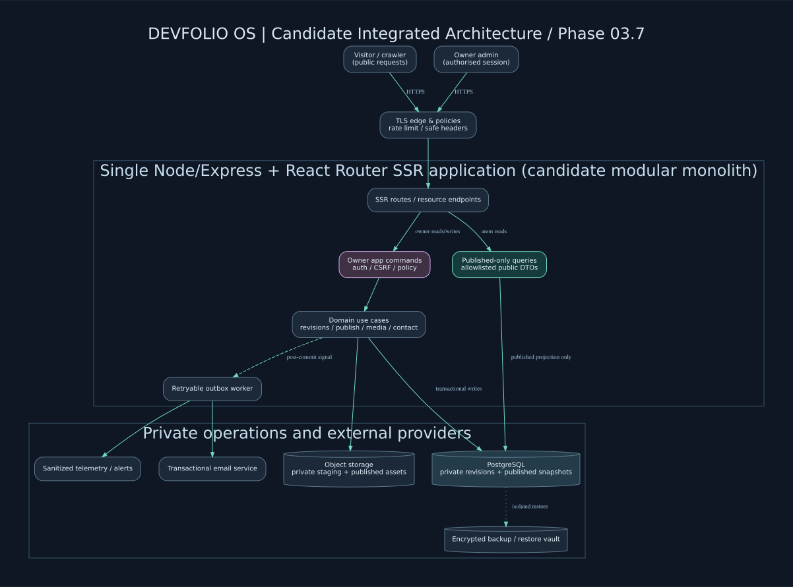
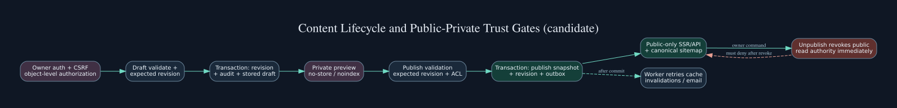
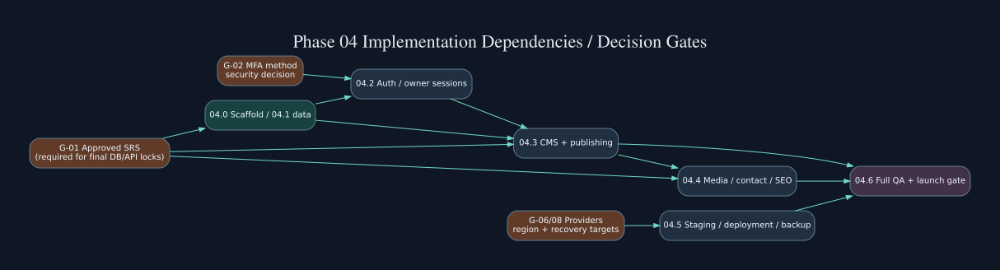
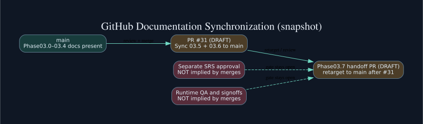

DEVFOLIO OS / ARCHITECTURE OFFICE
Phase 03.7 — Final Architecture Integration
Design handoff prepared · Owner acceptance pending
Integrates all Phase 03.0–03.6 planning packages into a reference architecture and a concrete Phase 04 build handoff. No production application, cloud infrastructure, approved SRS or executed security/a11y QA is claimed.
76FR/NFR IDs
318Previously planned Phase03 QA
50New handoff review cases
62Phase04 work items
20Tracked open gates
7Source archive packs
Evidence status
Approval is NOT inferred. Phase03.2 alone has explicit owner design-specification approval. SRS v1.1 candidate, schema/API freeze, MFA, provider decisions and runtime QA are open. Source files for 03.5–03.6 must be synchronized to main through PR #31.
Milestone inventory
| Phase | Deliverable | Design approval state | Implementation |
|---|---|---|---|
| 03.0 | Architecture planning | DESIGN_PREPARED | NOT_IMPLEMENTED |
| 03.1 | System context / baseline | DESIGN_PREPARED | NOT_IMPLEMENTED |
| 03.2 | Detailed component architecture | OWNER_APPROVED_SPEC_ONLY | NOT_IMPLEMENTED |
| 03.3 | Data architecture and candidate ERD | DESIGN_PREPARED_NOT_SCHEMA_APPROVED | NOT_IMPLEMENTED |
| 03.4 | API architecture and interface contracts | DESIGN_PREPARED_NOT_API_APPROVED | NOT_IMPLEMENTED |
| 03.5 | Authentication and security architecture | DESIGN_PREPARED_OWNER_APPROVAL_PENDING | NOT_IMPLEMENTED |
| 03.6 | Infrastructure and DevSecOps architecture | DESIGN_PREPARED_OWNER_APPROVAL_PENDING | NOT_IMPLEMENTED |
| 03.7 | Integrated architecture and Phase04 handoff | CANDIDATE_HANDOFF_OWNER_REVIEW_PENDING | NOT_IMPLEMENTED |
Architecture diagrams




Immediate next actions
- Review PR #31 and merge original 03.5–03.6 source docs into main.
- Retarget/review the Phase03.7 handoff PR.
- Resolve SRS and MFA ownership decisions before final DB/API contracts.
- Choose hosting/budget/privacy/RTO objectives; run real QA later in Phase04.